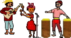

L’origine du mot séga remonte à plus ou moins 1822, les esclaves parlaient en effet de chéga ou plutôt de tchéga. Cette danse est originaire de l’Afrique de l’Est. Le séga est donc apparu à l’île Maurice avec les esclaves africains qui étaient amené là de force comme main d’oeuvre pour travailler dans les plantations.
Les esclaves avaient ramené avec eux les rythmes de leurs pays. La nostalgie de leur pays leur faisait entonner et danser lascivement aux rythmes d’instruments de fortune, confectionnés avec les ressources disponibles alors : des peaux de chèvre, du bois, des cailloux et pois secs.
En fait ce n’est pas que l’île Maurice qui a vu naitre le séga. On retrouve ces rythmes dans toutes les Mascareignes et aussi aux Seychelles et sur les Chagos, c’est la musique de l’océan Indien. Exclusivité de l’océan Indien, le séga se chante uniquement en créole. Chaque île ayant son créole propre, chaque île a aussi sa particularité. À Rodrigues, le rythme est plus rapide. Aux Seychelles, le rythme est beaucoup plus lent.
A la Réunion, le séga n’est pas la seule musique locale, le maloya qui est encore plus ancien vit aujourd’hui un regain de popularité.
Lire l’histoire de la musique à la Réunion et son chapitre sur le séga
 Le séga moderne connu le début de sa popularité dans les années cinquante et soixante. Il est encore joué avec les instruments traditionnels et fait partie des démonstrations folkloriques avec des danses costumées hautes en couleurs. Pour les femmes : petit haut noué sur le devant, jupe collante aux hanches et très large vers le bas. De telle manière, qu’elles puissent en saisir les extrémités pour les agiter. Pour les hommes : chemise et le pantalon corsaire. Les couleurs sont toujours très vives et très chamarrées.